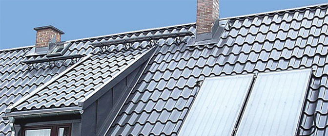

Натуральная черепица используется в строительстве на протяжении нескольких тысячелетий. Она является одним из древнейших кровельных материалов. Натуральная черепица использовалась еще в Древнем Риме, Египте, Древней Греции. Но времена меняются, и появляются новые технологии изготовления материалов для кровли. Современная металлочерепица вобрала в себя все лучшее от своей натуральной предшественницы, но при этом приобрела дополнительные функциональные свойства. Главные ее преимущества – удобство монтажа кровли и доступная стоимость, если сравнивать с натуральной черепицей. Благодаря легкости, а вес листов металлочерепицы составляет от 3,6 до 5,5 кг/кв. м, удешевляется конструкция стропильной системы здания, уменьшается стоимость доставки.
Металлочерепица – отличный материал для кровельного покрытия в строительстве всех видов объектов – многоэтажных домов, крупных промышленных объектов, небольших коттеджей. Единственное ограничение ее использования – требования к углу уклона ската кровли, который должен быть больше 14 градусов. Существует очень важный плюс использования металлочерепицы при ремонте старых крыш – демонтаж старой кровли необязателен. Более того, недемонтированные битумная черепица, рубероид или плоское железо будут выполнять функцию дополнительной гидроизоляции.
Металлочерепица имеет достаточно длительный срок службы – до 50 лет. Этот материал экологичен, отличается высокой коррозионной устойчивостью, сохраняет цвет на протяжении всего периода эксплуатации. Современная черепица выразительна в архитектурном плане, ее цветовой и фактурный ассортимент очень разнообразен.
Производство металлочерепицы
В производстве данного материала используется горячеоцинкованный лист с многослойным двусторонним покрытием. Его стальная основа гарантирует прочность, алюминий обеспечивает коррозионную устойчивость, благодаря цинку образуется катодная защита поверхностей среза. Срок службы кровельного материала напрямую зависит не только от качества оцинкованной стали, но и от технологии нанесения защитного покрытия. Если защитный слой каким-то образом будет нарушен, то лист будет подвержен коррозии, и чем лист тоньше, тем быстрее будут проходить разрушительные процессы. Но это вовсе не означает, что листы лучше делать толстыми, ведь они окажутся слишком тяжелыми, что даст лишнюю нагрузку на стропильную систему, создаст проблемы при монтаже кровли. В общем, качественная металлочерепица должна быть изготовлена с использованием совершенных технологий, и быть достаточно тонкой.
Самые известные производители металичерепицы используют стальной лист, оцинкованный с обеих сторон, его толщина не менее 0,45 мм. Защитное покрытие многослойное – наружный слой, грунтовка, пассивирующий слой. Последний противодействует разрушению цинкового покрытия под воздействием веществ, которые содержатся в грунтовке. Грунтовка, в свою очередь, улучшает сцепление защитного слоя с поверхностью. В виде внешнего слоя выступает краска или полимерные материалы, такие как пурал, полиэстер, пластизол. Благодаря полимерному покрытию металлочерепица может выдерживать температуру от - 50 до + 120 град. С.
Монтаж кровли
Металлочерепица – очень легкий и удобный для монтажа материал. Ее листы крепятся на обрешетке с использованием кровельных саморезов. Если сравнивать с натуральной или битумной черепицей, то стоимость монтажа металлочерепицы на порядок ниже. Нужно учитывать, что качество монтажа кровли напрямую влияет на срок ее эксплуатации. Фальцовка является самым распространенным способом монтажа металлочерепицы – края соседних листов сгибают специальным образом, после чего прочно соединяют. Швы, которые образуются при сцеплении листов, называются фальцами. Они бывают стоячими или лежачими, одинарными (с одним загибом) или двойными (с двумя загибами).
Профиль металлочерепицы
Геометрия профиля, тип покрытия и цвет металлочерепицы достаточно разнообразны. Черепичный рисунок, высота и ширина волны, форма профиля являются чисто эстетическими параметрами. Но следует учитывать, что они во многом определяют качество соединения листов и технологичность монтажа кровли. Кроме того, именно от формы профиля зависит, будут ли на готовой кровле видны вертикальные стыки.
Как выбрать металлочерепицу
Выбирая материал для кровли нужно брать во внимание целый ряд факторов: производитель, тип профиля, тип покрытия, цвет, а также ассортимент кровельных комплектующих. Если вы хотите купить металлочерепицу известного производителя, то учтите, что ее стоимость будет на 5-10% выше стоимости материалов менее известных марок. В данном случае, вы платите за уверенность в том, что в производстве металлочерепицы использованы только качественные материалы.
В процессе выбора металлочерепицы обращайте внимание на то, окрашена ли внутренняя сторона. Дело в том, что сторона, обращенная внутрь кровли, также должна быть защищена, так как на поверхности металла конденсируется влага, и при понижении температуры она может спровоцировать коррозию.
Металлочерепица Алматы
Источник: bud-imige.km.ua